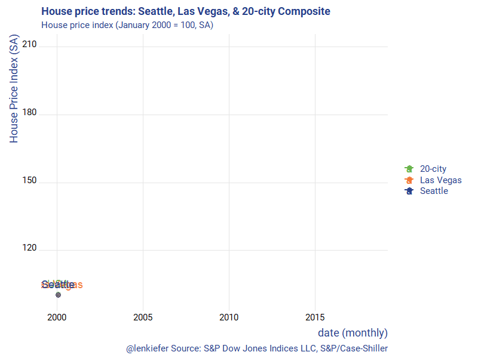
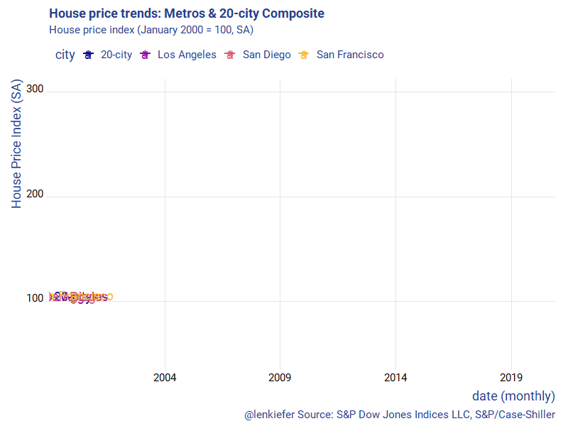
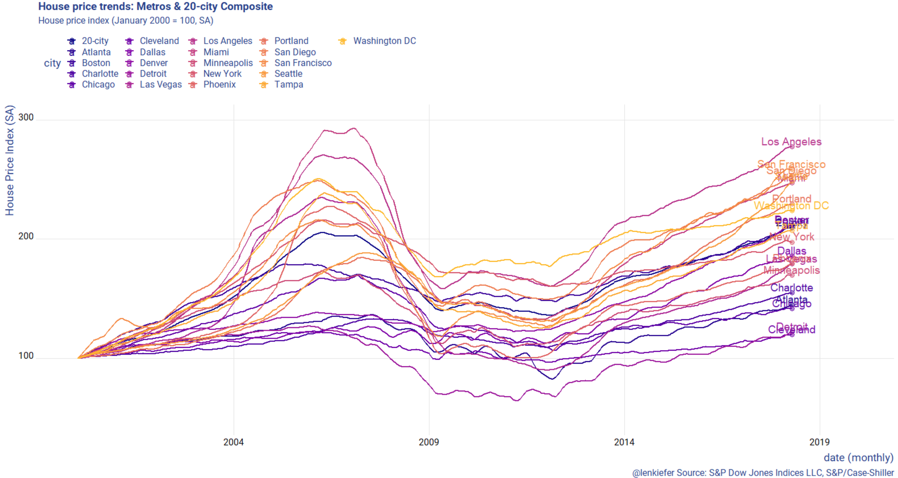

This tweet turned out to be popular:
👀house price trends👀 pic.twitter.com/JXB5P0H84A
— 📈 Len Kiefer 📊 (@lenkiefer) August 1, 2018
It’s a remix of a chart we made here, though it uses a different index. In the earlier post, we used the FHFA house price index, but this one used the Case-Shiller Index, which was released today.
Let me just post two gifs and then below will be the R code I used to create them.


R code
First, I modified our code for the FHFA index to get the Case Shiller index via FRED.
Code for first gif
# libraries
library(tidyverse)
library(ggridges)
library(extrafont)
library(lubridate)
library(tidyquant)
library(tweenr)
library(gifski)
# get data via FRED ----
hpi.data <- tq_get(c("SPCS20RSA",
"LVXRSA",
"SEXRSA"),
get="economic.data",
from="2000-01-01")
# orepare data ----
df.out <-
hpi.data %>%
group_by(symbol) %>%
mutate(price=100*price/price[date=="2000-01-01"]) %>%
ungroup %>%
group_by(date) %>%
spread(symbol,price) %>%
filter(year(date)>1989) %>%
ungroup()
# Prepare for tween
dfp <- df.out %>% mutate(day=1+(row_number()-1)*7, ease="linear")
plot_data_tween<-tween_elements(dfp, time = "day", group="ease",
ease="ease", nframes = nrow(dfp)*2)
df_tween_appear <- tween_appear(plot_data_tween, time='day', nframes = nrow(dfp)*2)
# number of frames
N <- max(df_tween_appear$.frame)
make_plot_appear <- function(i){
p <-
ggplot(data=df_tween_appear, aes(x=date,y=SPCS20RSA))+
geom_line(alpha=0)+
geom_line(data= .%>% filter(.frame==i, .age> -3.5) , aes(color="20-city"),size=1.05) +
geom_line(data= .%>% filter(.frame==i, .age> -3.5) , aes(y=LVXRSA ,color="Las Vegas"),size=1.05) +
geom_line(data= .%>% filter(.frame==i, .age> -3.5), aes(y=SEXRSA,color="Seattle"),size=1.05 ) +
geom_point(data= .%>% filter(.frame==i, .age> -3.5) %>% tail(1), size=3, alpha=0.5, aes(color="20-city"))+
geom_point(data= .%>% filter(.frame==i, .age> -3.5) %>% tail(1), size=3, alpha=0.5 , aes(y=LVXRSA ,color="Las Vegas"))+
geom_point(data= .%>% filter(.frame==i, .age> -3.5) %>% tail(1), size=3, alpha=0.5, aes(y=SEXRSA,color= "Seattle"))+
geom_text(data= .%>% filter(.frame==i, .age> -3.5) %>% tail(1), size=5, alpha=0.95, aes(label="USA",color="20-city"),nudge_y=5)+
geom_text(data= .%>% filter(.frame==i, .age> -3.5) %>% tail(1), size=5, alpha=0.95 , aes(y=LVXRSA ,label="Las Vegas",color="Las Vegas"),nudge_y=5)+
geom_text(data= .%>% filter(.frame==i, .age> -3.5) %>% tail(1), size=5, alpha=0.95, aes(y=SEXRSA,label="Seattle",color="Seattle"),nudge_y=5)+
theme_ridges(font_family="Roboto")+
scale_color_manual(name="",values=c(rgb(103,180,75, maxColorValue = 256),"#f37735","#27408b"))+
theme(text = element_text(color = "#27408b"))+
labs(y="House Price Index (SA)",x="date (monthly)",
title="House price trends: Seattle, Las Vegas, & 20-city Composite",
subtitle="House price index (January 2000 = 100, SA)",
caption="@lenkiefer Source: S&P Dow Jones Indices LLC, S&P/Case-Shiller")
return(p)
}
make_plot_appear(max(df_tween_appear$.frame))
# change this ----
mydir<-"PATH_TO_WHERE_YOU_SAVE_GIF"
gif_file <- save_gif({for (i in seq(1,N)){
g<- make_plot_appear(i)
print(g)
print(paste(i,"out of",N))
}
for (ii in 1:30){
print(g)
print(paste(ii,"out of",30))
}
}, gif_file= paste0(mydir,"/hpa_vegas_seattle_20_july2018.gif"),width = 800, height = 600, res = 92, delay=1/20)For the second gif we can create a function that will plot a line plot for an arbitrary number of cities. Case-Shiller has 20 of them and a 20-city composite index, as well as other flavors.
In my example posted above, I selected three California metros. But by varying the call for cities, you could collect whatever number you wanted.
Though it gets messy if you try to plot them all using the function defined below.
make_plot_appear2(i=N,clist=cities)
Code for second gif
tickers<- c("LXXRSA","SPCS20RSA","LVXRSA","SEXRSA",
"SFXRSA","NYXRSA","BOXRSA","SDXRSA","CHXRSA",
"DNXRSA","PHXRNSA","DAXRNSA","WDXRSA",
"ATXRNSA","MIXRNSA","POXRSA","MNXRSA","DEXRNSA","TPXRSA","CRXRSA","CEXRSA")
cities <- c("Los Angeles","20-city","Las Vegas","Seattle",
"San Francisco","New York","Boston","San Diego","Chicago",
"Denver","Phoenix","Dallas","Washington DC",
"Atlanta","Miami","Portland","Minneapolis","Detroit","Tampa","Charlotte","Cleveland")
df.all<- data.frame(symbol=tickers,city=cities, stringsAsFactors = FALSE)
hpi.all <- tq_get(tickers, get="economic.data",
from="2000-01-01")
hpi.all %>%
left_join(df.all,by="symbol") %>%
group_by(symbol,city) %>%
mutate(price=100*price/price[date=="2000-01-01"]) %>%
ungroup %>%
select(-symbol) %>%
group_by(date) %>%
spread(city,price) %>%
filter(year(date)>1989) %>%
ungroup() -> df.out2
dfp <- df.out2 %>% mutate(day=1+(row_number()-1)*7, ease="linear")
plot_data_tween<-tween_elements(dfp, time = "day", group="ease",
ease="ease", nframes = nrow(dfp)*2)
df_tween_appear <- tween_appear(plot_data_tween, time='day', nframes = nrow(dfp)*2)
xlim <- c(min(hpi.all$date),max(hpi.all$date) %m+% months(19))
ylim <- c(50, 300)
N <- max(df_tween_appear$.frame)
make_plot_appear2 <- function(i,
# a list of cities
clist=c("Los Angeles","Seattle","20-city","San Diego","Las Vegas","Portland","Denver")){
df.in <- filter(df_tween_appear,.frame==i, .age> -3.5)
df.plot <- df.in %>% select(-.age,-.frame,-.group,-day) %>%
gather(city,val,-date) %>% mutate(val=as.numeric(val)) %>%
filter(city %in% clist)
dd <- max(df.plot$date,na.rm=T)
p <-
ggplot(data=df.plot, aes(x=date,y=val, color=city,label=city))+
geom_line(size=1.05) +
geom_point(data= . %>% filter(date==dd), size=3, alpha=0.5)+
geom_text(data= . %>% filter(date==dd), size=5, alpha=0.95 ,nudge_y=5)+
scale_x_date(limits=xlim, date_breaks="5 years",date_labels="%Y")+
scale_y_continuous(limits= c(50, 300))+
scale_color_viridis_d(option="C", end=0.85)+
theme_ridges(font_family="Roboto")+
theme(legend.position="top")+
theme(text = element_text(color = "#27408b"))+
labs(y="House Price Index (SA)",x="date (monthly)",
title="House price trends: Metros & 20-city Composite",
subtitle="House price index (January 2000 = 100, SA)",
caption="@lenkiefer Source: S&P Dow Jones Indices LLC, S&P/Case-Shiller")
return(p)
}
make_plot_appear2(N, c("20-city","Los Angeles","San Diego","San Francisco"))
gif_file <- save_gif({for (i in seq(1,N)){
g<- make_plot_appear2(i,c("20-city","Los Angeles","San Diego","San Francisco"))
print(g)
print(paste(i,"out of",N))
}
for (ii in 1:30){
print(g)
print(paste(ii,"out of",30))
}
}, gif_file= paste0(mydir,"/hpa_cs_v2_july_31_2018.gif"),width = 800, height = 600, res = 92, delay=1/20)